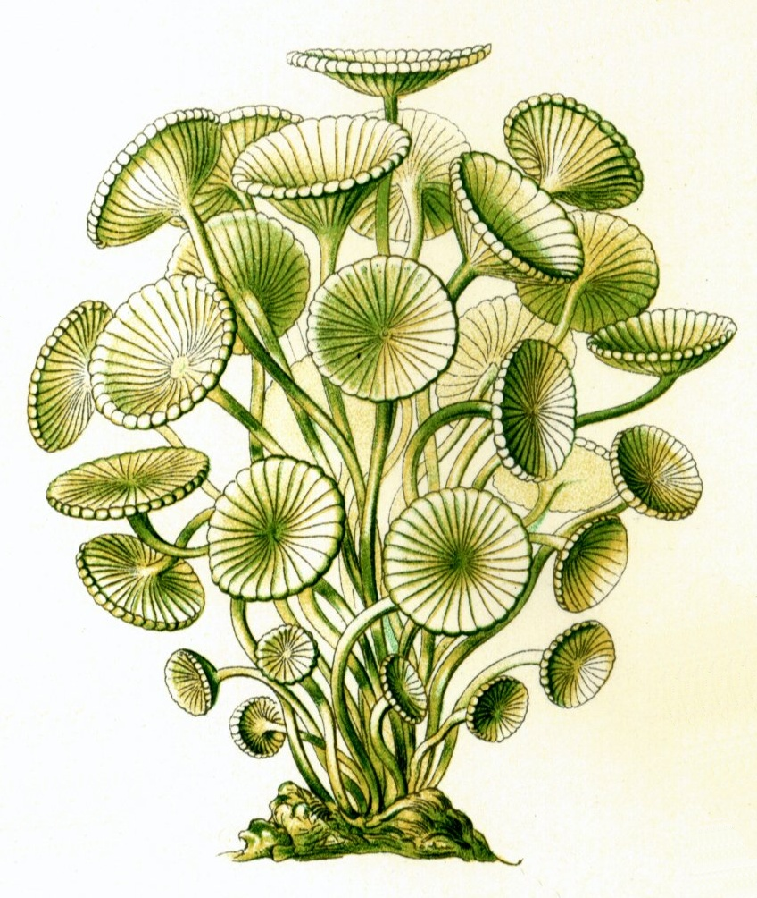

细胞核的结构和功能
本期导读
核移植 · 伞藻嫁接 · 核膜 · 核孔 · 核仁

视频原话 · 导读3 句
- 同学们好！这节课梳理人教版必修一第三章第三节——细胞核的结构和功能。7.7s
- 高考常考探究细胞核功能的实验、细胞核的结构，以及三类模型的判断。6.9s
- 我们按六个考点梳理，每个考点都讲清楚怎么考、怎么做。5.5s
细胞核的功能01#
遗传信息库
DNA 主要存在于细胞核中，储存着遗传信息
代谢和遗传的控制中心
细胞核通过 DNA 控制细胞的代谢和遗传
依据：DNA 主要在细胞核
易错
细胞核是代谢的控制中心，不是代谢中心；细胞代谢的主要场所是细胞质基质
视频原话3 句
- 考点一，细胞核的功能。细胞核是遗传信息库，是细胞代谢和遗传的控制中心。8.0s
- 原因是DNA主要存在于细胞核中，DNA上储存着遗传信息。6.3s
- 易错：细胞核是代谢的控制中心，不是代谢的中心；细胞代谢的主要场所是细胞质基质。8.7s
美西螈与蝾螈实验02#
美西螈核移植实验
- 黑色美西螈胚胎细胞的核
- 移入 →白色美西螈的去核卵细胞
- 发育 →全是黑色美西螈
→ 肤色遗传由细胞核控制
蝾螈受精卵横缢实验
- 有核的一半
- →能分裂
- 无核的一半
- →停止分裂
- →挤入细胞核
- →开始分裂
→ 细胞核控制着细胞的分裂、分化
解题方法
后代性状和谁的细胞核一致，就由谁控制；有核与无核、去核与补核形成对照
视频原话5 句
- 考点二，美西螈核移植实验。把黑色美西螈胚胎细胞的细胞核，移植到白色美西螈的去核卵细胞中，发育成的美西螈全是黑色的。12.6s
- 说明美西螈皮肤颜色的遗传是由细胞核控制的。4.8s
- 蝾螈受精卵横缢实验：有核的一半能分裂，无核的一半停止分裂；挤入一个细胞核后，无核的一半也开始分裂。10.2s
- 说明细胞核控制着细胞的分裂、分化。4.0s
- 解题方法：看后代性状和谁的细胞核一致，就由谁控制。5.8s
变形虫与伞藻实验03#
变形虫切割实验
有核的一半：摄食、对刺激有反应、生长和分裂
无核的一半：不能
→ 细胞核控制细胞的生命活动
无核的一半：不能
→ 细胞核控制细胞的生命活动
解题方法
嫁接只能说明伞帽形状与假根有关；核移植才能说明由细胞核控制
视频原话4 句
- 考点三，变形虫切割实验：有核的一半能摄食、对刺激有反应、生长和分裂，无核的一半不能，说明细胞核控制着细胞的生命活动。12.3s
- 伞藻嫁接实验：把菊花形帽伞藻的柄嫁接到伞形帽伞藻的假根上，长出的是伞形帽。8.3s
- 但细胞核在假根中，嫁接不能排除假根中细胞质的影响，所以还要做伞藻核移植实验。8.4s
- 解题方法：嫁接只能说明伞帽形状与假根有关，核移植才能说明与细胞核有关。8.0s
细胞核的结构04#
- 核膜：双层膜，把核内物质与细胞质分开
- 核孔：核质之间物质交换和信息交流
- 核仁：与某种 RNA 的合成和核糖体的形成有关
- 染色质：主要由 DNA 和蛋白质组成
易错
核孔有选择性，DNA 不能出核；代谢旺盛的细胞核孔多、核仁大
视频原话5 句
- 考点四，细胞核的结构。核膜是双层膜，把核内物质与细胞质分开。7.3s
- 核孔实现核质之间频繁的物质交换和信息交流。4.9s
- 核仁与某种RNA的合成以及核糖体的形成有关。5.0s
- 染色质主要由DNA和蛋白质组成，DNA是遗传信息的载体。6.4s
- 易错：核孔具有选择性，DNA不能通过核孔出细胞核；代谢旺盛的细胞，核孔多、核仁大。9.3s
染色质与染色体05#
同一种物质在细胞不同时期的两种存在状态，成分都是 DNA 和蛋白质
解题方法
染色质 ⇄ 染色体：只是形态不同，物质相同
视频原话3 句
- 考点五，染色质与染色体。染色质是细胞核中容易被碱性染料染成深色的物质。8.4s
- 细胞分裂时，细丝状的染色质高度螺旋化、缩短变粗，成为圆柱状或杆状的染色体；分裂结束时，又解螺旋成为染色质。12.0s
- 解题方法：染色质和染色体是同一种物质在细胞不同时期的两种存在状态，成分相同。8.7s
建构模型06#
模型：对认识对象所作的一种简化的概括性描述
物理模型
以实物或图画直观表达
真核细胞三维结构模型、DNA 双螺旋结构模型
概念模型
用文字、箭头表示概念间的关系
概念图
数学模型
用公式、曲线等表示
种群增长曲线
易错
照片不是模型（实物的真实记录）；画出的细胞结构模式图才是物理模型
视频原话4 句
- 考点六，科学方法——建构模型。模型是对认识对象所作的一种简化的概括性描述。8.5s
- 物理模型以实物或图画形式直观表达认识对象的特征，比如真核细胞的三维结构模型、DNA双螺旋结构模型。10.9s
- 概念模型用文字、箭头等表示概念之间的关系，如概念图；数学模型用公式、曲线等表示，如种群增长曲线。11.3s
- 易错：照片不是模型，电镜照片是实物的真实记录；画出的细胞结构模式图才是物理模型。9.2s
易错速查✓
先自己判断，再点按钮查看对错与解析。
- 1细胞核是细胞代谢的中心说法错误：是细胞代谢和遗传的控制中心
- 2美西螈实验说明肤色由细胞核控制说法正确。
- 3伞藻嫁接实验证明伞帽形状由细胞核决定说法错误：只说明与假根有关，还需核移植实验
- 4DNA可以通过核孔进入细胞质说法错误：核孔具有选择性，DNA不能出核
- 5染色质和染色体是两种不同的物质说法错误：是同一物质在不同时期的两种状态
- 6拍摄的洋葱表皮细胞照片属于物理模型说法错误：照片不是模型
遗传信息库，代谢和遗传的控制中心！
视频原话 · 易错速查5 句
- 最后，用六道判断题检验一下。3.6s
- 判断一？错，是控制中心。判断二？对。5.8s
- 判断三？错，还要做核移植实验。判断四？错，核孔具有选择性。8.0s
- 判断五？错，是同一种物质。判断六？错，照片不是模型。7.4s
- 六个考点串成一条线：细胞核是遗传信息库，是代谢和遗传的控制中心。我们下期再见！8.7s
图片来源
图片来源：Wikimedia Commons —— Ernst Haeckel《Haeckel Acetabularia acetabulum》Public domain
Ernst Haeckel, Public domain